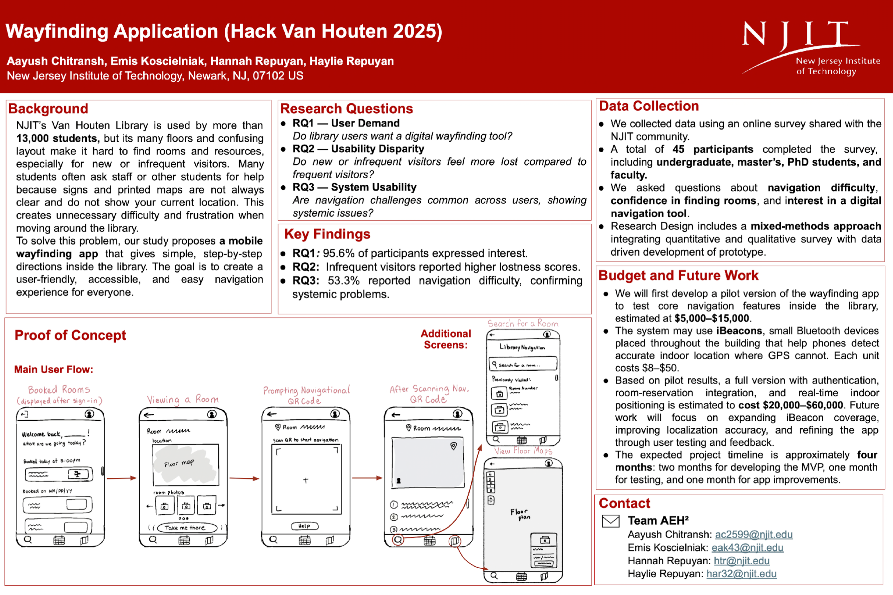

Project Overview
Hack Van Houten 2025 was a semester-long design competition where 13 interdisciplinary teams were challenged to improve wayfinding within NJIT's Robert W. Van Houten Library. The library serves more than 13,000 students, but its many floors and confusing layout make it hard to find rooms and resources, especially for first-time and infrequent visitors.
Our team, Team AEH², earned 1st place and a $200 prize for proposing a proof-of-concept QR-based digital wayfinding web application designed to enhance navigation and accessibility for all library visitors.
Team Members:
- Emis Koscielniak (Research Lead & Project Coordinator)
- Aayush Chitransh
- Hannah Repuyan
- Haylie Repuyan
Grounded in user-centered design principles, our solution featured interactive floor maps, group study room booking, book location support, and search functionality. Through iterative feedback sessions with librarians and a faculty mentor, we refined the experience to balance usability, stakeholder needs, and real-world implementation constraints.
This project strengthened my ability to translate research insights into practical, accessible digital solutions while collaborating closely with institutional stakeholders.
The Challenge
The Robert W. Van Houten Library presented navigation challenges for students and visitors due to its multi-floor layout, evolving space usage, and limited real-time wayfinding support. Many students often ask staff or other students for help because signs and maps are not always clear and do not show your current location. This creates unnecessary difficulty and frustration when moving around the library.
The competition challenged teams to design a scalable, accessible solution that would improve wayfinding, reduce navigation friction, and enhance the overall user experience for a diverse range of library users — including first-year students, commuters, and visitors unfamiliar with the space.
The Solution
Our team proposed a QR-based digital wayfinding web application designed to make navigating the Robert W. Van Houten Library intuitive, efficient, and accessible.
Strategically placed QR codes throughout the library would allow users to scan and instantly access an interactive web interface tailored to their current floor. The application included:
- Interactive floor maps with clear visual navigation cues
- Book location assistance to help users quickly find specific collections
- Group study room booking integration
- Search functionality for services, rooms, and resources
The solution was designed as a scalable, proof-of-concept system that balanced usability, technical feasibility, and stakeholder needs. By reducing confusion and minimizing reliance on staff for directional support, the application aimed to improve overall navigation efficiency and user satisfaction within the library.
Research & Discovery
My primary contribution to the team was conducting a comprehensive literature review to ground our design decisions in established research on wayfinding, spatial cognition, and digital navigation systems.
Research Focus Areas:
- Wayfinding strategies in complex indoor environments
- QR code implementation best practices for accessibility
- Digital wayfinding solutions in academic libraries
- User behavior patterns in multi-floor building navigation
This research informed our design approach and helped validate our solution against existing usability standards and accessibility guidelines.
Research Questions
Our study was structured around three core research questions to understand user needs and validate our solution:
RQ1 — User Demand
Do library users want a digital wayfinding tool?
RQ2 — Usability Disparity
Do new or infrequent visitors feel more lost compared to frequent visitors?
RQ3 — System Usability
Are navigation challenges common across users, showing systemic issues?
Data Collection & Key Findings
We collected data using an online survey shared with the NJIT community, employing a mixed-methods approach that integrated quantitative and qualitative survey data with data-driven development of prototypes.
Participant Demographics:
- Total of 45 participants completed the survey
- Included undergraduate, master's, PhD students, and faculty
- Represented users of Van Houten Library, which serves 13,000+ students
Key Findings
Strong User Demand
95.6% of participants expressed interest in a digital wayfinding tool
Usability Disparity
Infrequent visitors reported higher lostness scores compared to frequent users
Systemic Navigation Issues
58.3% reported navigation difficulty, confirming widespread problems
Navigation Challenges
Users asked questions about navigation difficulty, confidence in finding rooms, and interest in a digital tool
Proof of Concept
We developed a comprehensive user flow demonstrating how students would interact with the QR-based wayfinding system from initial entry to successful navigation.
Main User Flow:
- Booked Rooms: Welcome screen showing user's booked study rooms and group meetings
- Viewing a Room: Room details with location, floor map, and booking information
- Prompting Navigation: QR code prompt encouraging users to scan for turn-by-turn navigation
- After Scanning Map: Interactive floor plan with user's current location and destination highlighted
The interface included additional screens for the Library Navigator, library search functionality, and detailed floor plans to ensure comprehensive navigation support.
Project Coordination
Beyond research, I coordinated team meetings, organized task workflows, and facilitated communication between team members to ensure we met project milestones throughout the semester.
Coordination Activities:
- Scheduled and led weekly team meetings
- Maintained project timeline and task assignments in Google Sheets
- Coordinated feedback sessions with librarians and faculty mentors
- Ensured all team members contributed to documentation in Overleaf
Key Features
QR Code Access Points
Strategically placed codes on each floor provide instant access to location-specific information without requiring app downloads.
Interactive Floor Maps
Visual navigation with clear wayfinding cues helps users understand their location and plan routes efficiently.
Room Booking Integration
Seamless study room reservation system allows users to find, view availability, and book spaces directly from the interface.
Book Location Support
Search functionality guides users to specific book collections and materials with floor and shelf information.
Budget & Future Work
Our proposal included a detailed implementation plan with realistic budget estimates and technology recommendations for a phased rollout.
Phase 1: Pilot Version ($5,000–$15,000)
- Test core navigation features inside the library
- Validate QR code placement and user interaction patterns
- Gather initial user feedback for refinement
Technology Enhancement: iBeacons
The system may use iBeacons, small Bluetooth devices placed throughout the building to help phones detect accurate indoor location where GPS cannot. Each unit costs $8–$50, providing precise positioning for turn-by-turn navigation.
Phase 2: Full Version ($20,000–$60,000)
- Authentication and room-reservation integration
- Real-time indoor positioning with comprehensive iBeacon coverage
- Expanded functionality based on pilot results
- Improved navigation accuracy and user testing refinements
Expected Timeline: Four Months
- Two months for developing the MVP for testing
- One month for testing and collecting user feedback
- One month for app improvements based on findings
Competition Poster
Below is the infographic poster we presented at the Hack Van Houten 2025 competition, showcasing our research, design process, and proposed solution.

Team AEH² competition poster presenting our wayfinding solution
Outcomes & Impact
🏆 Competition Result: 1st Place
Team AEH² won 1st place out of 13 interdisciplinary teams, earning a $200 prize. Our solution was recognized for its comprehensive research foundation, user-centered design approach, and realistic implementation plan.
Key Achievements:
- Developed a scalable proof-of-concept that balanced user needs with implementation feasibility
- Validated demand with 95.6% of survey participants expressing interest
- Integrated stakeholder feedback from librarians and faculty throughout the design process
- Created an accessibility-focused solution suitable for diverse user populations
- Demonstrated the value of research-backed design decisions in competitive environments
- Produced comprehensive implementation plan with detailed budget and timeline
What I Learned:
- Interdisciplinary Collaboration: Working with team members from different backgrounds enriched our solution
- Stakeholder Engagement: Regular feedback sessions helped align our design with institutional needs
- Research Application: Translating academic literature into practical design recommendations
- Project Management: Coordinating complex timelines and deliverables across a semester-long project
- Data-Driven Design: Using survey results and quantitative findings to validate design decisions